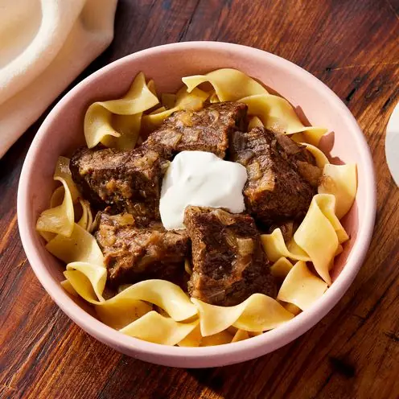

Chef John's Beef Goulash
- Total time2 hrs and 30 mins
- Serves4
- Ingredients19
- Steps9

Ingredients
- 2 ½ pounds boneless beef chuck roast, cut into 2-inch cubes
- salt and ground black pepper to taste
- 2 tablespoons vegetable oil
- 2 onions, chopped
- 2 teaspoons olive oil
- ½ teaspoon salt
- 2 tablespoons Hungarian paprika
- 2 teaspoons caraway seeds, crushed
- 1 teaspoon freshly ground black pepper
- 1 teaspoon dried marjoram
- ½ teaspoon ground thyme
- ½ teaspoon cayenne pepper
- 4 cups chicken broth, divided
- ¼ cup tomato paste
- 3 cloves garlic, crushed
- 2 tablespoons balsamic vinegar
- 1 teaspoon white sugar
- ½ teaspoon salt, or to taste
- 1 bay leaf
Directions
- Gather all ingredients.
- Season beef with salt and black pepper.
- Heat vegetable oil in a large skillet over high heat; cook and stir beef in hot oil in batches until browned on all sides, about 5 minutes per batch.
- Transfer to a large stockpot and reserve drippings in the skillet.
- Return skillet to medium heat; stir onions into the reserved drippings, drizzle olive oil over onions, season with 1/2 teaspoon salt and cook until onion has softened, about 5 minutes. Transfer to the stockpot with beef.
- Combine paprika, caraway seeds, black pepper, marjoram, thyme, and cayenne pepper in the skillet and toast over medium heat until fragrant, about 3 minutes.
- Add 1 cup chicken broth and stir; transfer to the beef and onion mixture.
- Stir 3 cups chicken broth into beef mixture. Add tomato paste, garlic, vinegar, sugar, 1/2 teaspoon salt, and bay leaf; place stockpot over high heat and bring to a boil.
- Reduce heat to low and simmer until a fork inserts easily into the meat, 1 1/2 to 2 hours.
Recipe credit: allrecipes.com